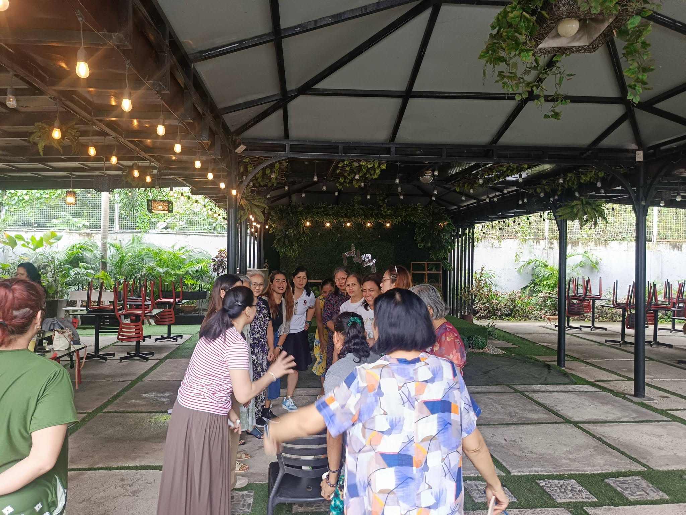
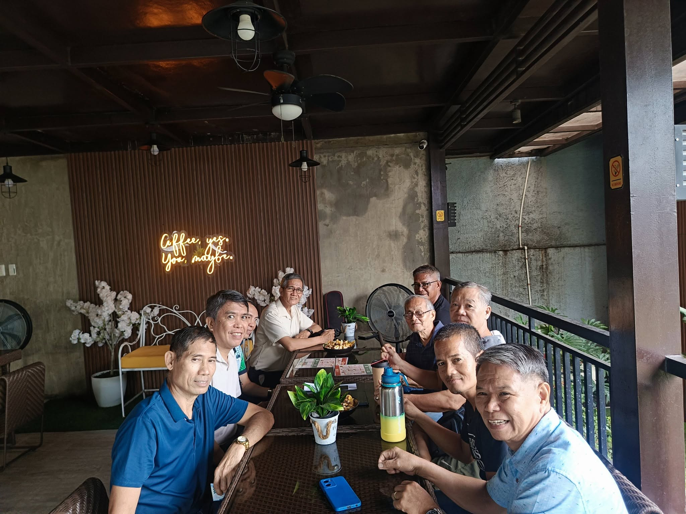
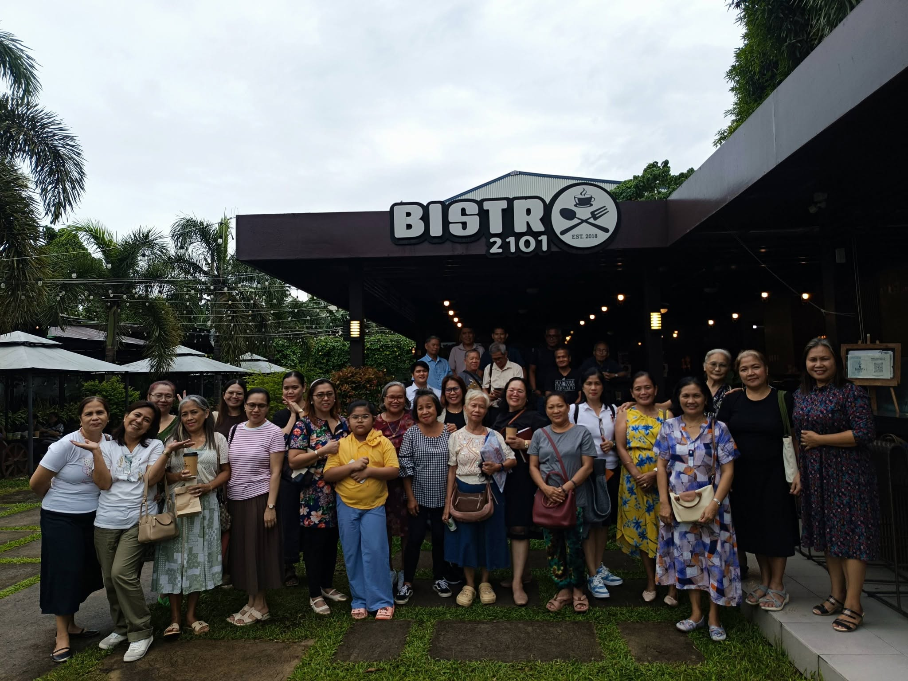

01 / CONNECTION
Church Gatherings
Creating welcoming opportunities for members and visitors to meet, connect, and enjoy Christian fellowship.
Building meaningful relationships through Christian love, unity, encouragement, and shared faith in Jesus Christ.
The Fellowship Ministry provides opportunities for members and visitors to connect, encourage one another, and grow together as one church family. We believe that Christian fellowship is more than simply gathering together—it is sharing life, showing care, and strengthening one another through the love of Christ.
Through church gatherings, special activities, and meaningful conversations, we aim to build a welcoming community where everyone can feel valued, supported, and encouraged to continue walking with the Lord.
Our desire is to promote genuine relationships that strengthen the unity of the church and inspire every believer to serve God together.
We create opportunities for people to connect, care for one another, and build a stronger church family.
Creating welcoming opportunities for members and visitors to meet, connect, and enjoy Christian fellowship.
Encouraging one another through prayer, kind words, and practical support during both joyful and difficult seasons.
Organizing meaningful activities that help strengthen relationships and promote unity among the congregation.
Helping guests feel at home and introducing them to a caring community centered on Christ.
Developing sincere friendships rooted in Christian love, respect, understanding, and concern for one another.
Inspiring members to work together, share their gifts, and participate in the life and mission of the church.
“And let us consider one another to provoke unto love and to good works: Not forsaking the assembling of ourselves together...”
Take a look at moments of connection, encouragement, and joy within our church family.



We invite you to worship, connect, and grow with us. Follow our Facebook page for church updates, activities, and announcements.
VISIT OUR FACEBOOK PAGE